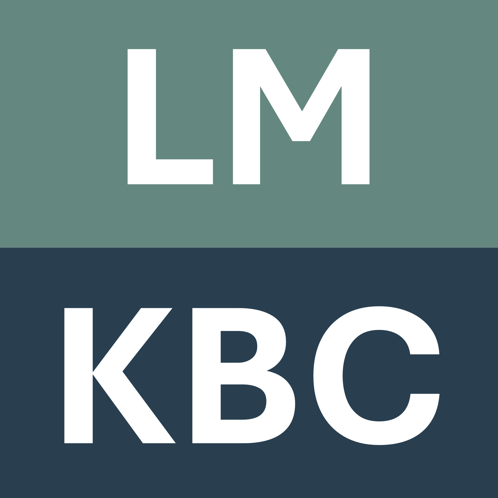

News
Introduction
 LM-KBC Challenge @ ISWC 2025
Task Description
Pretrained language models (LMs) have advanced a range of semantic tasks and have also shown promise for knowledge extraction from the models itself. Although several works have explored this ability in a setting called probing or prompting, the viability of knowledge base construction from LMs remains underexplored (Hu et al., 2024). In the 4th edition of the LM-KBC challenge, we ask participants to build actual disambiguated knowledge bases from LMs, for given subjects and relations. In crucial difference to existing probing benchmarks like LAMA (Petroni et al., 2019), we make no simplifying assumptions on relation cardinalities, i.e., a subject-entity can stand in relation with zero, one, or many object-entities. Furthermore, submissions need to go beyond just ranking predicted surface strings and materialize disambiguated entities in the output, which will be evaluated using established KB metrics of precision and recall.
This year there are two major changes:
- Disallowing fine-tuning.
- Disallowing external corpora (RAG).
Thus this year is a true exploration of knowledge within a given LLM.
Special Features
For comparability, all teams have to use the same LLM, Qwen3-8B, without any finetuning or retrieval augmentation.
The dataset, will be released in two parts: a training and development set, and a test set. The test set will be released later than the training set, to prevent overfitting. Submissions will be evaluated using standard KB metrics of precision and recall. The challenge will be run on the CodaLab platform, and the results will be presented at the ISWC conference.
Final result
Winners
| Rank | User | Team | Authors | Score | Code |
|---|---|---|---|---|---|
| 1 | edarsem | LAMA-WeST Lab | Albert-Roulhac and Zouaq | 44.4 | github.com/Lama-West/ReWiSe |
| 2 | JingboHe | He and Razniewski | 40.5 | github.com/JingboHH/LM-KBC-ISWC-2025/ | |
| 3 | acmc | Soft Thinking | Creo et al. | 39.8 | github.com/ACMCMC/soft-thinking |
| 4 | isam | Sam | 24.1 | github.com/sirenze/lmkbc-2025-submission | |
| 5 | aclay | Clay et al. | 21.6 | github.com/alexclay42/lmkbc | |
| 6 | baseline | 21.2 | github.com/lm-kbc/dataset2025/blob/master/models/baseline_model.py |
Calls
Call for Participants
Important Dates
| Activity | Dates |
|---|---|
| Dataset (train and dev) release | May 1, 2025 |
| Dataset (test) release | July 14, 2025 |
| Submission of test output and code | July 25, 2025 |
| Submission of system description papers | August 3, 2025 |
| Acceptance and winner announcement | August 7, 2025 |
| Presentations@ISWC | November 2025 |
Submission Details
Results on the validation leaderboard can be submitted during the whole time at https://codalab.lisn.upsaclay.fr/competitions/22964. Similarly, results on the test dataset are to submitted to an online leaderboard at Codalab.
System descriptions need to be formatted according to this template. Also email a paper-signed copyright form to simon.razniewski@tu-dresden.de (form no GenAI / form if using GenAI).
System descriptions should be uploaded on Openreview.
For code, please create a public Github repo (or similar), and share the link in the report.
Organization
Challenge Organizers
Jan-Christoph Kalo
University of Amsterdam

Tuan-Phong Nguyen
MPI for Informatics

Simon Razniewski
ScaDS.AI and TU Dresden
Bohui Zhang
King's College London
Contact
For general questions or discussion please use the Google Group.
Past Editions
Our challenge has been running since 2022. For more information on past editions, please visit the corresponding websites:
- 3rd Edition: LM-KBC 2024 website, 2024 proceedings
- 2nd Edition: LM-KBC 2023 website, 2023 proceedings
- 1st Edition: LM-KBC 2022 website, 2022 proceedings